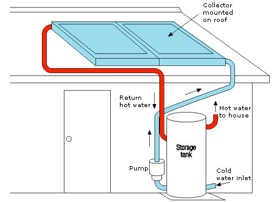

Solar Energy
Solar energy refers to the energy from the Sun. It comes to our Earth in form of sunlight and is the widely available form of the energy. It is found at every place, where the Sun is shining. This is the energy that is available everywhere, free of cost, for everyone to use. Another term “solar power” is used, which refers to the generation of power from solar energy. Without solar energy, our Earth would have looked entirely different than it looks today. All the living things on the planet Earth are dependent on the sun.
Solar energy is a type of renewable energy because it will never run out (at least for billions of year). Unlike fossils fuels which are decreasing due to consumption, and are not renewed.
Solar energy can be converted into different forms of energy (e.g. mechanical or electrical). People around the world use solar energy for different purposes. In some places, people use solar energy for heating their homes and producing electricity for them. Many countries around the world are using solar energy to generate electricity. Among them, the largest electricity is produced by US and China.
Solar Heating
There are basically two types of solar heating methods. Each one has its own advantages and disadvantages.
- Solar passive heating:
- Solar active heating
In this method, solar energy is used for heating homes and buildings by using sunlight directly. For example, houses are heated when sunlight enter through the glass windows, heating the materials inside. The heat is then trapped inside the houses and buildings, which also keep them warm during the night. Passive heating is also used in greenhouses to make them warm in the colder areas to grow the vegetables of warm places.
This method of heating has been used by humans for thousands of years ago for heating houses and drying some fruits and vegetables. The disadvantage of this method is that the things that need to be heated must be placed in the direct sunlight.
Another way to heat houses and building uses solar thermal panels. These panels collect the heat from the sun and warm up the water inside them. Cold water is circulated through these panels and then stored in the tanks as hot water. Then, hot water can be used bathrooms, kitchens, and may be used to heat the house. This method of heating is called active heating because mechanical devices are for collect, distribute and store the solar energy. It provides some advantages over passive heating. The main advantage is that the heat can be collected at one place and utilized at another place. But, extra power is needed to drive the mechanical devices e.g. water pump.
Solar Electricity Generation
Another important use of the solar energy is to make electricity from it. Since sunlight is available everywhere, so electricity can be produced at almost every place. All the houses and buildings in remote locations can take advantage from it and may live completely independent from the grid power.
All the houses and buildings that generate electricity from sunlight use solar panels. Solar panels are also common in the satellites because they operate far in space and they provide a source of electricity than can power than for their entire life. Recently in July 2016, a spacecraft has reached the planet Jupiter. This spacecraft generates all of its electricity from solar panels. Moreover, Mars Rovers on the planet Mars also use solar panels to power their motors and science equipment.
Advantages of Solar power
- It is the type of renewable energy and will be available for the whole life of our planet.
- We can use solar panels to generate electricity in remote areas. Whereas, smaller panels can be used to power handheld devices.
- They produce no pollution to generate electricity, which makes them environment-friendly.
- They need low maintenance.
Disadvantages of Solar Power
- Its initial cost is high.
- It is available during daytime and for the night, backup devices must be used.
- Backup devices such as lead-acid batteries are quite expensive.
- During cloudy and rainy days, they are not effective in generating power.